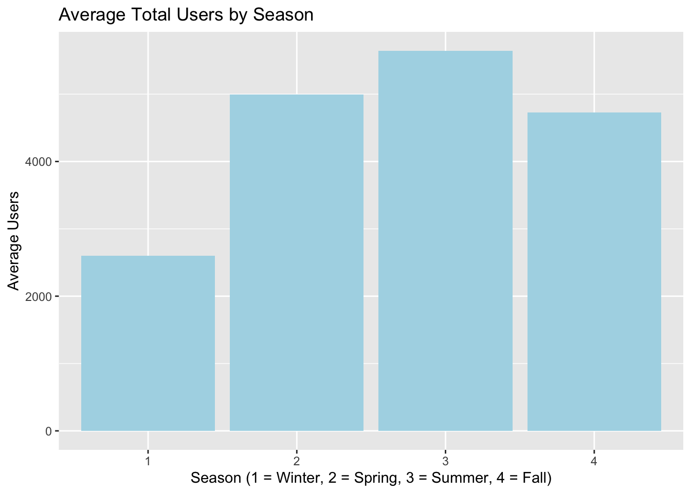

From Data to Action: Leveraging Bike-Sharing Patterns to Enhance Sustainable Mobility
1 Executive Summary
This report analyzes two years of data from Washington D.C.’s Capital Bikeshare system, revealing how environmental and temporal factors influence bike usage patterns. The findings highlight the strong link between favorable weather, holidays, and bike rental trends, with implications for urban transport systems.
Applying these insights to Australia, the report underscores the significant role of cycling culture, particularly among university students, in sustaining bike-sharing programs like Lime e-bikes. The study emphasizes the potential of bike-sharing systems to promote sustainable, healthy, and efficient mobility.
2 Introduction
Urban transportation is shifting toward more sustainable and efficient mobility solutions. Bike-sharing programs have emerged as a popular option, offering flexible access to bicycles, including e-bikes for short-distance urban travel. These systems help reduce traffic congestion, lower emissions, and promote healthy lifestyles.
This report analyzes two years of data from the Capital Bikeshare system in Washington D.C. (2011–2012), capturing rental patterns across time and weather conditions. The dataset includes both daily and hourly records with variables such as temperature, humidity, season, weekday, and user type.
We explore how environmental and temporal factors affect rental demand, user composition, and daily usage trends.
Although U.S.-based, the findings are highly applicable to Australian cities, where cycling is a practical and cultural norm, especially among university students.
Campuses often encourage cycling by design, creating ideal conditions for bike-sharing success. Insights from this study can support better planning, resource allocation, and policy development for shared mobility services in Australian urban settings.
3 Summary of Insights
| Feature | Effect on Rentals |
|---|---|
| Temperature | Strong positive impact |
| Feels-like Temp | Similar to temperature |
| Humidity | Mild negative impact |
| Windspeed | Weak correlation |
| Hour of Day | Peaks during morning and evening commute |
| Weekday vs Weekend | Higher and consistent on weekdays |
| Time Progression | General upward trend year over year |
4 Methodology:
This report uses the Bike Sharing Dataset from Washington D.C., which contains hourly and daily records for 2011–2012 (Fanaee-T & Gama, 2014).It contains two files: day.csv(daily rental data) and hour.csv (hourly rental data) from 2011 to 2012 in Washington D.C.
The datasets are complete, with no missing values. They contain weather metrics, timestamps, and detailed user counts. We categorized the variables into three analytical areas:
1. Environmental conditions: Continuous variables include temperature (temp), perceived temperature (atemp), humidity (hum), and windspeed (windspeed) — all normalized. These were sourced from `hour.csv` and used to assess how weather influences demand.
2. Temporal factors: These include hour of day (hr), day of week (weekday), holidays, and working days (workingday). hour.csvwas used to examine hourly rental patterns and compare weekdays to weekends. Seasonal trends were analyzed using season (1 = Winter, 2 = Spring, 3 = Summer, 4 = Fall) and mnth from day.csv.
3. User behavior: Total rentals (cnt) are split into casual(non-registered) and registered (subscribers). day.csv was used to study seasonal variation in user types, while hour.csv was used for finer temporal granularity.
All analysis was performed in R, using tidyverse for data wrangling and ggplot2 for visualization. The report was built in Quarto for reproducibility, and Git was used for structured collaboration via separate branches.
Figure 1 shows average total users by season using day.csv, capturing clear seasonal demand shifts.
Table 1 uses hour.csv to show average hourly rentals on weekdays vs. weekends, demonstrating time-of-day behavioral differences. Further analysis appears in the Results section.
| hr | Weekday | Weekend |
|---|---|---|
| 0 | 37.6 | 94.1 |
| 1 | 17.5 | 72.6 |
| 2 | 9.4 | 56.0 |
| 3 | 5.2 | 27.0 |
| 4 | 5.4 | 8.5 |
| 5 | 24.3 | 8.5 |
| 6 | 99.5 | 17.8 |
| 7 | 282.1 | 39.5 |
| 8 | 464.6 | 99.2 |
| 9 | 238.7 | 171.7 |
| 10 | 138.1 | 261.2 |
| 11 | 161.9 | 322.0 |
| 12 | 204.3 | 374.2 |
| 13 | 202.5 | 380.2 |
| 14 | 187.7 | 372.5 |
| 15 | 203.9 | 368.2 |
| 16 | 292.3 | 360.8 |
| 17 | 515.9 | 326.6 |
| 18 | 483.2 | 282.3 |
| 19 | 343.3 | 232.7 |
| 20 | 246.8 | 174.4 |
| 21 | 184.6 | 141.8 |
| 22 | 137.2 | 116.8 |
| 23 | 87.5 | 88.7 |
5 Results:
5.1 Hourly and Weather-Based Rental Patterns
As shown in Figure 2, rental activity varies by time of day and day type. On weekdays, registered users drive sharp peaks around 8 AM and 5–6 PM, aligning with typical commute hours. On weekends, rentals are more evenly distributed, with casual users becoming more prominent around midday. This pattern reveals distinct behavioral trends between commuter and leisure riders. ?@fig-weather-scatterr shows that temperature and apparent temperature positively correlate with total rentals, while humidity and windspeed have weaker negative effects [@li2015bike]. These findings highlight the combined impact of structured routines and weather conditions on bike-sharing demand.
5.2 Seasonal Trends and User Behavior
To examine how bike usage shifts across seasons, we analyzed total rentals (cnt) and user type composition. Figure 4 hows that demand peaks in summer and fall, while winter records the lowest activity. Table 2 breaks down usage by user type, revealing that registered users dominate in all seasons but especially in winter, suggesting habitual commuting behavior. In contrast, casual user activity more than doubles in summer, indicating recreational or tourist usage. These seasonal shifts suggest that demand is driven by both weather and user intent, with commuters being more consistent and casual users more season-sensitive.
6 Discussion, Conclusion and Recommendations:
This report set out to explore how environmental and temporal factors influence bike rental demand in Washington D.C., using the UCI Bike Sharing Dataset. We investigated rental patterns by season, weather conditions, temperature, hour of day, and user type (casual vs. registered), with the goal of uncovering meaningful trends to inform data-driven decision-making.
Our findings revealed strong seasonal and hourly patterns. Rental demand peaked in summer and fall, with a surge in casual user activity during warmer months — suggesting weather-sensitive, potentially tourist-driven behavior. In contrast, registered users displayed consistent usage throughout the year and weekdays, indicative of habitual commuting. Rental volumes also followed predictable daily cycles, with distinct peaks during morning and evening commute hours and more gradual midday rises on weekends.
These trends show that registered users form a reliable commuter base, while casual users introduce seasonal and environmental variability. This distinction is critical for bike-sharing companies, city planners, and transportation authorities when developing policies, allocating fleet resources, and adjusting marketing strategies.
We recommend:
- Increasing bike availability and docking stations near recreational or high-footfall areas in summer
- Ensuring year-round service quality and infrastructure for commuter-heavy routes
- Using time-based demand trends to optimize staff scheduling, rebalancing logistics, and promotional campaigns
Importantly, our analysis is reproducible and adaptable. The approach we used — integrating open data with R, Quarto, and Git — can be applied to other cities, climates, or shared mobility services. Whether for city governments, local councils, or private operators managing bikes or e-scooters, these insights can help refine network planning, predict usage peaks, position vehicles more effectively, and even plan battery charging or maintenance station locations in electric fleets.
7 References
Fanaee-T, H., & Gama, J. (2014). Event labeling combining ensemble detectors and background knowledge. https://archive.ics.uci.edu/ml/datasets/Bike+Sharing+Dataset.